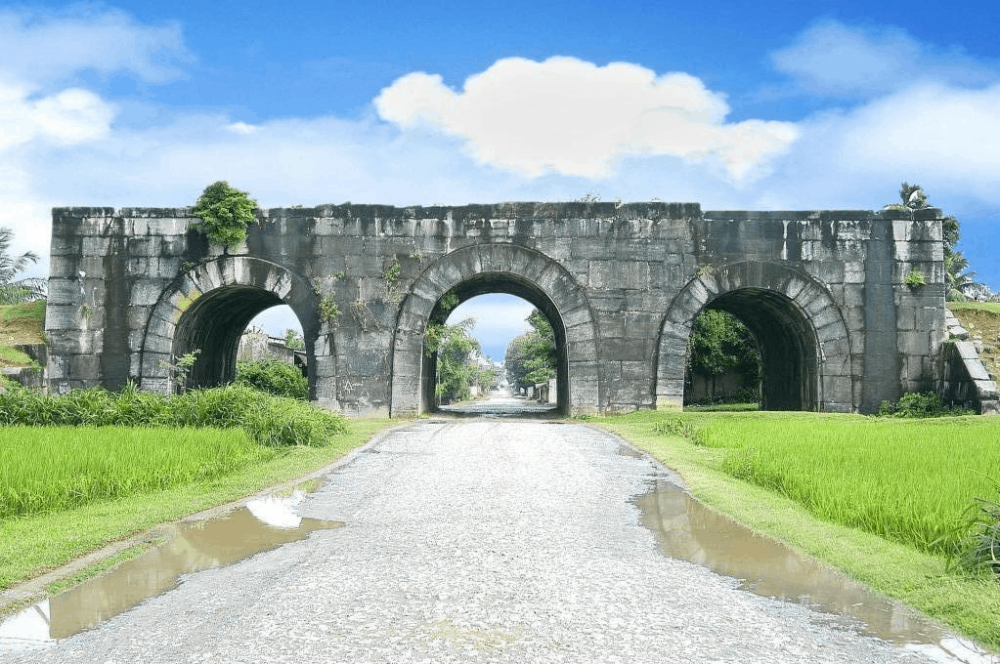

Thành nhà Hồ - Thanh Hóa
Giới thiệu về Thành nhà Hồ
Trên bản đồ du lịch Thanh Hóa, bạn sẽ không thể bỏ qua điểm đến thành nhà Hồ, một trong
những di tích lịch sử nổi tiếng của xứ Thanh, có giá trị rất cao về mặt văn hoá, kiến
trúc.
Thành nhà Hồ (hay còn gọi là thành Tây Đô, thành An Tôn, thành Tây Kinh hay thành Tây
Giai) là kinh đô nước Đại Ngu (quốc hiệu Việt Nam thời nhà Hồ), nằm trên địa phận nay
thuộc tỉnh Thanh Hóa. Đây là tòa thành kiên cố với kiến trúc độc đáo bằng đá có quy mô
lớn hiếm hoi ở Việt Nam, có giá trị và độc đáo nhất, duy nhất còn lại ở tại Đông Nam Á
và là một trong rất ít những thành lũy bằng đá còn lại trên thế giới.
Lịch Sử Hình Thành
Thành Tây Đô được xây vào năm 1397 dưới triều Trần do quyền thần Hồ Quý Ly chỉ huy, người không lâu sau (1400) lập ra nhà Hồ. Theo sử sách, thành bắt đầu xây dựng vào mùa xuân tháng một năm Đinh Sửu niên hiệu Quang Thái thứ 10 đời vua Thuận Tông của vương triều Trần. Người quyết định chủ trương xây dựng là Hồ Quý Ly, lúc bấy giờ giữ chức Nhập nội Phụ chính Thái sư Bình chương quân quốc trọng sự, tước Tuyên Trung Vệ quốc Đại vương, cương vị Tể tướng, nắm giữ mọi quyền lực của triều đình. Người trực tiếp tổ chức và điều hành công việc kiến tạo là Thượng thư bộ Lại Thái sử lệnh Đỗ Tỉnh (có sách chép Mẫn). Hồ Quý Ly xây thành mới ở động An Tôn (nay thuộc địa phận các xã Vĩnh Long, Vĩnh Tiến, huyện Vĩnh Lộc, tỉnh Thanh Hóa), làm kinh đô mới với tên Tây Đô, nhằm buộc triều Trần dời đô vào đấy trong mục tiêu chuẩn bị phế bỏ vương triều Trần. Tháng 3 năm Canh Thân (26-3 đến 24-4-1400), vương triều Hồ thành lập (1400- 1407) và Tây Đô là kinh thành của vương triều mới, thành Thăng Long đổi tên là Đông Đô vẫn giữ vai trò quan trọng của đất nước. Vì vậy thành Tây Đô được dân gian quen gọi là Thành nhà Hồ. Thành đá được xây dựng trong một thời gian kỷ lục, chỉ chừng 3 tháng. Các cấu trúc khác như các cung điện, rồi La Thành phòng vệ bên ngoài, đàn Nam Giao... còn được tiếp tục xây dựng và hoàn thiện cho đến năm 1402. Hồ Quý Ly từ khi nắm quyền lực của triều Trần cho đến khi sáng lập vương triều mới đã ban hành và thực thi một loạt chính sách cải cách về các mặt chính trị, kinh tế, tài chính, văn hóa, giáo dục nhằm khắc phục cuộc khủng hoảng của chế độ quân chủ cuối triều Trần, củng cố chính quyền trung ương và chuẩn bị cho cuộc kháng chiến chống Minh. Trong lịch sử chế độ quân chủ Việt Nam, Hồ Quý Ly là một nhà cải cách lớn với một hệ thống chính sách và biện pháp khá toàn diện, táo bạo. Thành nhà Hồ được xây dựng và tồn tại trong những biến động cuối thế kỷ XIV đầu thê kỷ XV, gắn liền với sự nghiệp của nhà cải cách lớn Hồ Quý Ly và vương triều Hồ. Thành được xây dựng trong thời gian ngắn, chỉ khoảng 3 tháng (từ tháng Giêng đến tháng 3 năm 1397) và cho đến nay, dù đã tồn tại hơn 6 thế kỷ nhưng một số đoạn của tòa thành này còn lại tương đối nguyên vẹn.
